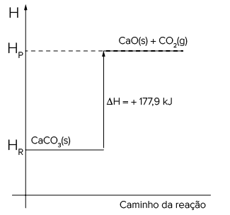

A temperatura do organismo acima de 37,8 °C caracteriza febre.
Sasha_Suzi/iStockphoto.com
Por que sentimos frio quando estamos com febre?
A febre funciona como um alarme de que alguma infecção (seja por vírus, seja por bactérias) está atacando o organismo. Ela dá o sinal para acelerar a produção dos anticorpos que irão combater a doença e é essa atividade mais intensa
em nosso organismo que aumenta sua temperatura. A sensação de frio ocorre porque o corpo passa a perder calor muito rapidamente, a partir do momento em que os vasos sanguíneos da pele se dilatam irradiando mais calor para o
exterior. “Além disso, como os seres humanos têm sua temperatura equilibrada com a do ambiente (cerca de 37 °C), ao se aquecer a pessoa passará a sentir o ambiente mais frio. Por isso, embora o corpo esteja quente, a temperatura
externa parecerá relativamente mais baixa”, afirma o neurologista Paulo Monzillo, do Hospital Albert Einstein, em São Paulo. Outro fator que contribui para reforçar a sensação de frio é o aumento da transpiração, que, ao evaporar
sobre a pele, também tem a função de resfriar o corpo.
REDAÇÃO. “Por que sentimos frio quando estamos com febre?”.
Mundo Estranho , 1o abr. 2002. Abril Comunicações S.A. Disponível em: <https://super.abril.com.br/mundo-estranho/por-que-sentimos-frio-quando-estamos-com-febre/>. Acesso em: 20 out. 2021.
Quando perdemos calor para o ambiente, estamos realizando um fenômeno endotérmico ou exotérmico?
Como podemos representar os processos termoquímicos?
Para situações de primeiros socorros, existem compressas instantâneas, quentes ou frias. Como funcionam?
Neste capítulo serão abordadas as habilidades
EM13CNT101
,
EM13CNT102
e
EM13CNT309
.
É comum encontrarmostambém as seguintesrepresentações para asreações termoquímicasexotérmicas:
Reagentes ➝ Produtos + calor
Reagentes - calor ➝ Produtos
Cálculos de entalpia
Conforme vimos no capítulo anterior, a variação de entalpia de um processo pode ser definida por ΔH 5 Hprodutos – Hreagentes.
Quando tratamos de uma reação exotérmica, que libera calor, temos Hreagentes > Hprodutos e o valor que ΔH assume é negativo. Uma reação termoquímica exotérmica pode ser representada por:
Reagentes ➝ Produtos ΔH < 0
Além disso, também existe a representação gráfica:
Exemplo:
A combustão do carbono grafite, formando gás carbônico, é exotérmica:C(grafite) + O2(g) ➝ CO2(g) ΔH = –393 kJ/mol
Na forma gráfica, teremos a seguinte representação:
A variação de entalpia da reação de combustão é dada em kJ/mol, isto é, são liberados 393 kJ a cada mol de CO2(g) produzido. Se 2 mols de CO2(g) forem produzidos, a energia liberada será o dobro:
2 C(grafite) 1 2 O2(g) ➝ 2 CO2(g) ΔH 5 – 786 kJ
Quando tratamos de uma reação endotérmica, que absorve calor, temos Hprodutos > Hreagentes, e o valor que ΔH assume é positivo. Uma reação termoquímica endotérmica pode ser representada por:
Reagentes ➝ Produtos ΔH > 0
É comum encontrarmos também as seguintes representações para as reações termoquímicas endotérmicas:
Reagentes ➝ Produtos - calor
Reagentes + calor ➝ Produtos
Além disso, também existe a representação gráfica:
Exemplo:
A decomposição do carbonato de cálcio é endotérmica:
CaCO3(s) ➝ CaO(s) + CO2(g) ΔH = + 177,9 kJ
Na forma gráfica teremos a seguinte representação:

A variação de entalpia dessa reação é dada em kJ/mol, isto é, são absorvidos 177,9 kJ a cada mol de CaCO3 consumido. Se 3 mols de carbonato de cálcio forem consumidos, a energia necessária para a reação ocorrer será o triplo:
3 CaCO3(s) ➝ 3 CaO(s) + 3 CO2(g) ΔH = +533,7 kJ
Se desejarmos representar os respectivos processos inversos, as equações deverão ser escritas no sentido contrário.
A reação inversa à da combustão do grafite equivale à decomposição do gás carbônico; essa reação é endotérmica. Veja dois exemplos.
Reação direta: combustão do grafite.
C(grafite) + O2(g) ➝ CO2(g)
ΔH 5 – 393 kJ/mol
Reação inversa: de composição do CO2.
CO2(g) ➝ C(grafite) + O2(g)
ΔH = + 393 kJ/mol
A reação inversa da decomposição do carbonato de cálcio é a reação entre o óxido de cálcio e o gás carbônico, que é exotérmica.
Ao inverter as reações químicas, inverteremos também o sinal do ΔH, e, ao multiplicar os coeficientes da equação por um número qualquer, o ΔH também deverá ser multiplicado por esse mesmo número. Isso ocorre porque o
ΔH é uma grandeza extensiva , ou seja, é diretamente proporcional às respectivas quantidades de reagentes e produtosda reação.
Discussão em sala
Termoquímica no cotidiano
Considerando que os processos exotérmicos são aqueles que liberam energia e os endotérmicos são aqueles que absorvem energia, vamos refletir juntos em sala: Quando um tijolo é atirado do vigésimo andar de um prédio e atinge
o chão, temos um processo exotérmico ou endotérmico?
Reação direta: decomposição do CaCO3.
CaCO3(s) ➝ CaO(s) 1 CO2(g)
ΔH = + 177,9 kJ/mol
Reação inversa: formação do CaCO3.
CaO(s) + CO2(g) ➝ CaCO3(s)
ΔH = – 177,9 kJ/mol
Tipos de entalpia
Uma substância química está no seu
estado-padrão quando a pressão é de 100 kPa e a temperatura é de 25 °C.
Quando a reação química é representada por uma equação com reagentes e produtos que estão em seu estado-padrão, denomina-se a variação da entalpia reacional como
entalpia-padrão , e o ΔH passa a ser representado por ΔH0.
Entalpia-padrão de combustão
Reações de combustão ocorrem em presença de oxigênio. Quando essas reações ocorrem nas condições-padrão, é possível obter a entalpia-padrão de formação (ΔHf0). Caso a reação de combustão do metano ocorra no estado-padrão (1 atm e 25 °C), a energia liberada
é chamada de
entalpia-padrão de combustão. Veja dois exemplos:
Equação de combustão do metano Entalpia-padrão de combustão
Equação de combustão do hidrogênio Entalpia-padrão de combustão
H2(g) 1
O
2(g) ➝ H2O(L) ΔHc0 5 – 286 kJ/mol
O calorímetro é um equipamento utilizado para quantificar o calor liberado ou absorvido durante fenômenos químicos ou físicos. O instrumento funciona medindo a temperatura antes e depois de um processo que ocorre em seu interior. A partir daí, pode-se
medir o
calor específico
de substâncias e entalpias de processos químicos.
Fazendo uso de um calorímetro, é possível determinar o calor envolvido em reações de combustão e determinar a entalpia-padrão dos mais diversos combustíveis.
Sinhyu/iStockphoto.com
Calorímetro.
Mais
Pontociência –
Calorímetro
de espuma, Pontociência.
Neste
web canal é possível acompanhar a produção de um calorímetro caseiro utilizando espuma e garrafa PET.
CRC Press. Handbook of Chemistry and Physics 102nd Edition.
Entalpia-padrão de formação
As reações químicas de formação são caracterizadas pela presença de apenas substâncias simples como reagentes e formando apenas um mol de um único produto. Quando essas reações ocorrem nas condições-padrão, é possível obter a entalpia-padrão
de formação (ΔHf0). Veja dois exemplos.
Equação de formação do iodeto de potássio
Entalpia-padrão de formação do iodeto de potássio
K(s) 1
fracao_001
I2(g) ➝ KI(s)
ΔHf0 = – 327,9 kJ/mol
Equação de formação da água
Entalpia-padrão de formação da água
H2(g) 1
fracao_001
O2(g) ➝ H2O(L)
ΔHf0 = – 286 kJ/mol
De acordo com essa convenção, o potássio metálico (K), o iodo sólido (I2) e o gás hidrogênio (H2) têm entalpia-padrão de formação igual a zero.
E se houver mais de uma forma alotrópica? Como determinar qual forma é a mais estável? A forma alotrópica mais estável é a menos energética e, consequentemente, a mais abundante na natureza. Por exemplo, entre o carbono grafite
e o carbono diamante, a forma alotrópica mais estável é o grafite, e a essa forma alotrópica atribuímos Hf0 = 0; para as demais formas alotrópicas do carbono, atribuímos Hf0 = 0.
Para apreciarmos a influência da forma alotrópica na reação, vamos comparar as energias liberadas na combustão do carbono em duas formas alotrópicas distintas:
C(grafite) + O2(g) ➝ CO2(g) ΔH = – 94,0 kcal
C(diamante) + O2(g) ➝ CO2(g) ΔH = – 94,45 kcal
Partindo-se do reagente na forma alotrópica mais estável (menos energética), obtém-se menor quantidade de energia liberada ao fim da reação.
De maneira similar à tabela de entalpia-padrão de combustão, é possível tabelar também os valores de entalpia-padrão de formação para diversas substâncias.
CRC Press. Handbook of Chemistry and Physics 102nd Edition.
Entalpia-padrão de dissolução
Os processos de dissolução podem ser endotérmicos ou exotérmicos e são baseados em duas etapas, cada uma delas envolvendo um tipo de energia:
Inicialmente, é preciso romper a estrutura do sólido, seja ele iônico ou molecular, ou seja, romper o retículo cristalino. A energia necessária para desfazer o retículo cristalino, nas condições-padrão, é denominada
entalpia-padrão reticular ΔHret0 . Como essa energia precisa ser fornecida, essa primeira etapa é endotérmica:
ΔHret0 > 0
A segunda etapa consiste no isolamento das partículas constituintes da substância. A água, solvente que estamos considerando, envolve essas partículas e impede que se reorganizem novamente. A hidratação ou solvatação dessas
partículas nas condições-padrão, que é exotérmica, envolve uma quantidade de energia denominada
entalpia-padrão de hidratação ΔHhid0 :
ΔHhid0 < 0
Assim, a
entalpia-padrão de dissolução ΔHd0 é a soma da entalpia-padrão reticular e a de hidratação:
ΔHd0 = ΔHret0 + ΔHhid0
Se |ΔHret0| > |ΔHhid0|, a dissolução é endotérmica e a vizinhança experimenta uma diminuição de temperatura.
Se |ΔHret0| < |ΔHhid0|, a dissolução é exotérmica e a vizinhança experimenta aumento de temperatura.
Entalpia de reação e entalpias de formação
Voltemos à definição de entalpia de uma reação química:
ΔH = Hprodutos – Hreagentes
O que representa a quantidade Hreagentes? Podemos dizer que representa todo o conteúdo energético do estado inicial da reação, quando todos os componentes estão na forma de reagentes; é razoável, então, associar essa
quantidade de energia à soma das entalpias de formação de todos os reagentes. Assim, Hreagentes = Σ ΔHf0 reagentes.
De maneira análoga, a quantidade Hprodutos representa todo o conteúdo energético do estado final da reação, quando todos os componentes estão na forma de produtos; é razoável, então, associar essa quantidade de energia à soma das
entalpias de formação de todos os produtos. Assim, Hprodutos = Σ ΔHf0 produtos.
Então, podemos escrever a variação de entalpia de uma reação como sendo a variação das entalpias de formação dos reagentes para os produtos. Em outras palavras,
ΔH 5 Σ ΔHf0 produtos – Σ ΔHf0 reagentes
Fatores que influenciam o ΔH das reações
Os valores da variação de entalpia das reações são dependentes de muitos fatores, da energia intrínseca das substâncias envolvidas, da temperatura, da quantidade de reagentes adicionados, dos estados físicos de produtos e reagentes,
da alotropia e da pressão do sistema reacional. Aprenderemos um pouco mais sobre cada um desses fatores.
Temperatura
Uma reação que ocorre a uma temperatura X apresenta um ΔHx. A mesma reação ocorrida a uma temperatura Y > X apresenta um ΔHy = ΔHx. Isso ocorre porque o calor envolvido na variação de temperatura
dos reagentes de X até Y é diferente do calor envolvido na variação de temperatura
dos produtos de X até Y. Exemplo:
Já vimos que quando aumentamos as quantidades de reagentes, o valor da entalpia aumenta proporcionalmente.
Estados físicos
A mesma substância, em estados físicos diferentes, tem entalpias diferentes. O estado sólido apresenta alto nível de organização das moléculas, e isso significa baixa quantidade de energia nas moléculas e alto nível de energia
disponível para ser liberado para o ambiente; o estado líquido apresenta organização intermediária nas moléculas, o que implica energia também intermediária; o estado gasoso apresenta organização molecular baixa; portanto,
as moléculas estão livres para se movimentar e consequentemente têm muita energia, sobrando menos energia para ser liberada na reação
Em módulo, podemos determinar que:
ΔHsólido > ΔHlíquido > ΔHgasoso
Para o caso da formação da molécula de água:
H2(g) 1
fracao_001
O2(g) ➝ H2O(s) ΔH = – 291,8 kJ
H2(g) 1
fracao_001
O2(g) ➝ H2O(L) ΔH = – 285,8 kJ
H2(g) 1
fracao_001
O2(g) ➝ H2O(g) ΔH = – 241,8 kJ
Alotropia
Como já vimos, a variedade alotrópica mais estável nas condições-padrão apresenta entalpia de formação igual a zero; isso significa que a substância mais estável é também a menos energética.
Pressão
A pressão só influencia o ΔH de reações que envolvem substâncias gasosas. O valor do ΔH só varia de modo significativo para pressões da ordem de 1 000 atm. Como as reações normalmente são padronizadas sob pressão atmosférica normal
(1 atm), a menos que haja alguma ressalva, não se leva em conta a variação no valor de ΔH com a pressão.
Questão resolvida
1
Uerj Considere os seguintes valores das entalpias-padrão da síntese do HCL, a partir dos mesmos reagentes no estado gasoso.
HCL(g) ΔH0 = – 92,5 kJ/mol
HCL(ℓ) ΔH0 = – 108,7 kJ/mol
Calcule a entalpia-padrão, em kJ/mol, de vaporização do HCL e nomeie duas mudanças de estado físico dessa substância que sejam exotérmicas.
Resolução:
A vaporização é a mudança do estado líquido para o estado gasoso.Vaporização do HCℓ:
A glicose sofre combustão no nosso organismo, gerando energia para que possamos realizar as atividades do nosso dia a dia:
C6H12O6 + 6 O2 ➝ 6 CO2 + 6 H2O
ΔH = – 2 820 kJ/mol
Se uma refeição fornece aproximadamente 500 g de glicose, quanto de energia será liberada em sua combustão?
–8 502,7 kJ
–7 833,4 kJ
–9 753,2 kJ
–8 932,1 kJ
–7 983,5 kJ
3
Observe o gráfico e responda.
Escreva a reação representada graficamente com seu valor de variação de entalpia.
Escreva a reação inversa também com seu valor de ΔH.
Se a água formada na reação fosse líquida, e não gasosa, o valor de ΔH seria maior ou menor?
4
A combustão completa da sacarose sólida libera 1 348,9 kJ. Se a entalpia-padrão de formação do gás carbônico é –393 e da água líquida é –286, qual é a entalpia-padrão de formação da sacarose no estado sólido?Dado: fórmula da
sacarose: C12H22O11
4 120,5 kJ/mol
– 5 370,8 kJ/mol
8 540,3 kJ/mol
– 6 513,1 kJ/mol
– 9 367,2 kJ/mol
Consolidando saberes
1
EsPCEx-SP 2018 Algumas viaturas militares administrativas possuem motores à combustão que utilizam como combustível a gasolina. A queima (combustão) de combustíveis como a gasolina, nos motores à combustão, fornece a
energia essencial para o funcionamento dessas viaturas militares. Considerando uma gasolina na condição padrão (25 °C e 1 atm), composta apenas por n-octano (C8H18) e que a sua combustão seja completa (formação exclusiva
de CO2 e H2O gasosos como produtos), são feitas as seguintes afirmativas:
Dados:
A combustão da gasolina (C8H18) é uma reação exotérmica;
Na combustão completa de 1 mol de gasolina, são liberados 16 mols de gás carbônico (CO2);
A entalpia de combustão (calor de combustão) dessa gasolina é –5 080 kJ/mol (ΔHc 5 –5 080 kJ/mol);
O calor liberado na combustão de 57 g de gasolina é de 1 270 kJ.
Das afirmativas apresentadas estão corretas apenas a
I, II e III
I, III e IV
I e II
II e IV
I e III
2
UFU-MG 2018
Disponível em: <https://www.colegioweb.com.br/wp-content/uploads/21337.jpg.>. Acesso em: 30 mar. 2018.
O esquema ilustra o aspecto energético da reação de formação de água líquida a partir dos gases hidrogênio e oxigênio. Essa reação é uma
eletrólise, que gera a alteração do número de oxidação do oxigênio e do hidrogênio da molécula de água.
queima, com absorção de energia durante toda a etapa da reação química entre os reagentes.
combustão, que libera energia na forma de calor e pode ser utilizada na propulsão de naves espaciais.
hidrólise, que ocorre com a formação de água pela reação do oxigênio com o hidrogênio.
3
EsPCEx-SP 2017 Uma das aplicações da trinitroglicerina, cuja fórmula é C3H5N3O9, é a confecção de explosivos. Sua decomposição enérgica gera como produtos os gases nitrogênio,
dióxido de carbono e oxigênio, além da água, conforme mostra a equação da reação a seguir:
Além de explosivo, a trinitroglicerina também é utilizada como princípio ativo de medicamentos no tratamento de angina, uma doença que acomete o coração. Medicamentos usados no tratamento da angina usam uma dose padrão de 0,6 mg
de trinitroglicerina na formulação. Considerando os dados termoquímicos da reação a 25 °C e 1 atm e supondo que essa massa de trinitroglicerina sofra uma reação de decomposição completa, a energia liberada seria aproximadamente
de
Dados:
Massas atômicas: C = 12 u; H = 1 u; N = 14 u; O = 16 u.
ΔHf0 (H2O) = –286 kJ/mol;
ΔHf0 (CO2) = –394 kJ/mol;
ΔHf0 (C3H5N3O9) = –353,6 kJ/mol
4,1 J
789,2 J
1432,3 J
5,3 kJ
362,7 kJ
4
FICSAE-SP 2017 A fermentação é um processo anaeróbico de síntese de ATP, fornecendo energia para o metabolismo celular. Dois dos processos de fermentação mais comuns a partir da glicose são a fermentação alcoólica e
a fermentação láctica.
C6H12O6 ➝ 2 CO2 1 2 C2H5OH (fermentação alcoólica)
C6H12O6 ➝ 2 C3H6O3 (fermentação láctica)
Dados: Entalpia de formação (ΔHf0):
ΔHf0 do CO2 = –394 kJ/mol
ΔHf0 do C3H6O3 = –678 kJ/mol
ΔHf0 do C2H5OH = –278 kJ/mol
ΔHf0 do C6H12O6 = –1268 kJ/mol
Sobre a energia envolvida nesses processos de fermentação, é possível afirmar que
a fermentação láctica absorve energia enquanto que a fermentação alcoólica libera energia.
os dois processos são endotérmicos, absorvendo a mesma quantidade de energia para uma mesma massa de glicose fermentada.
a fermentação alcoólica libera uma quantidade de energia maior do que a fermentação láctica para uma mesma massa de glicose envolvida.
a fermentação láctica libera uma quantidade de energia maior do que a fermentação alcoólica para uma mesma massa de glicose envolvida.
5
Unesp 2018 Analise os três diagramas de entalpia.
O ΔH da combustão completa de 1 mol de acetileno, C2H2(g), produzindo CO2(g) e H2O(ℓ) é
11140 kJ
1820 kJ
–1299 kJ
–510 kJ
–635 kJ
6
Uefs-BA 2017
Um motociclista foi de Salvador-BA para Feira de Santana-BA, percorrendo no total 110 km. Para percorrer o trajeto, sua motocicleta flex consumiu 5 litros de etanol (C2H5OH, d 5 0,8 g/mL), tendo um consumo médio de 22 km/L. Com
base nos dados de entalpia de formação de algumas substâncias, o calor envolvido na combustão completa por litro de etanol foi, em kJ, aproximadamente,
– 1 367
+ 1 367
– 18 200
+ 10 936
– 23 780
7
Uece 2016 Durante a Segunda Guerra Mundial, o monóxido de carbono foi usado como combustível alternativo nos veículos para suprir a falta de gasolina. O monóxido de carbono era obtido em equipamentos conhecidos como
gasogênios, pela combustão parcial da madeira. Nos motores dos automóveis, o monóxido de carbono era convertido em gás carbônico ao reagir com o oxigênio, e liberava 57 kcal/mol. Sabendo-se que a entalpia do produto dióxido
de carbono é –94 kcal, pode-se afirmar corretamente que a entalpia de formação do monóxido de carbono é
–37 kcal/mol
–151 kcal/mol
+37 kcal/mol
+151 kcal/mol
superação
Fuvest-SP A dieta de jogadores de futebol deve fornecer energia suficiente para um bom desempenho. Essa dieta deve conter principalmente carboidratos e pouca gordura. A glicose proveniente dos carboidratos é armazenada sob
a forma do polímero glicogênio, que é uma reserva de energia para o atleta.
Certos lipídios, contidos nos alimentos, são derivados do glicerol e também fornecem energia.
Durante a respiração celular, tanto a glicose quanto os ácidos graxos provenientes do lipídio derivado do glicerol são transformados em CO2 e H2O. Em qual destes casos deverá haver maior consumo de oxigênio: na transformação
de 1 mol de glicose ou na transformação de 1 mol do ácido graxo proveniente do lipídio cuja fórmula estrutural é mostrada acima? Explique. Durante o período de preparação para a Copa de 2014, um jogador de futebol recebeu,
a cada dia, uma dieta contendo 600 g de carboidrato e 80 g de gordura. Durante esse período, o jogador participou de um treino por dia.
Calcule a energia consumida por km percorrido em um treino (kcal/km), considerando que a energia necessária para essa atividade corresponde a 2/3 da energia proveniente da dieta ingerida em um dia.
Dados:
Energia por componente dos alimentos:
Carboidrato...........4 kcal/g
Gordura.................9 kcal/g
Distância média percorrida por um jogador: 5 000 m/treino
 O
2(g) ➝ H2O(L) ΔHc0 5 – 286 kJ/mol
O
2(g) ➝ H2O(L) ΔHc0 5 – 286 kJ/mol